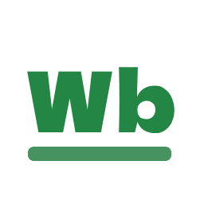
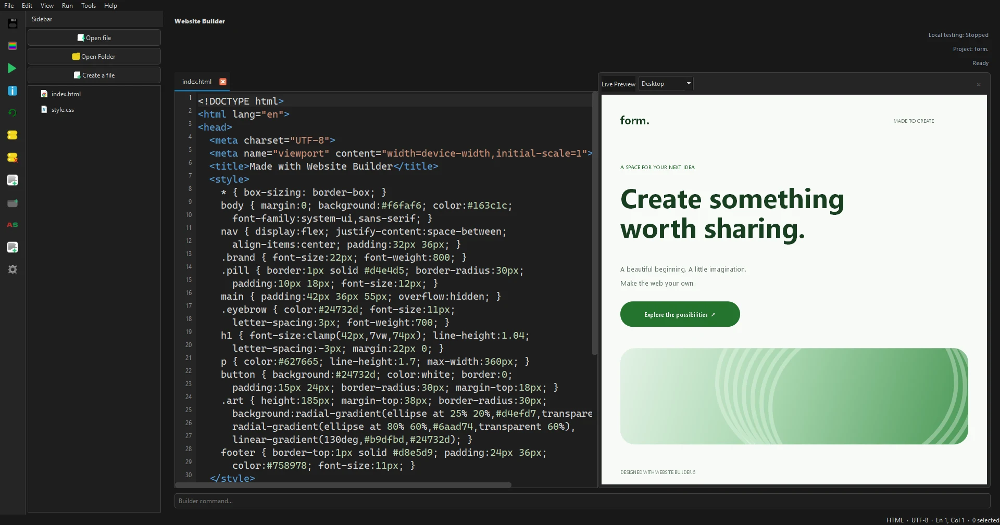

See it as you build.
Live previews and desktop, tablet and phone widths help you shape your website as you work.
Apps, website tools, addons and community projects made to keep creating simple.

NEW FROM JANEKTECHCreate what comes next.
A clearer workspace for your next website. Write your code, see your page take shape, and test locally — all in Website Builder.

Your ideas. Your preview. Your workflow.
Explore all JanekTech apps →Live previews and desktop, tablet and phone widths help you shape your website as you work.
Emmet, project search, tabbed editing, styles, addons and a command palette keep the everyday work moving.
Detect Apache or PHP, configure your project, and start the local server when you choose.
Build, preview and test your next website with live previews, Emmet, styles and local server controls.
Explore version 6More secure, better encripted vilent.
Still in developmentDiscover addons, upload styles and share your work with other users.
Browse addonsWebsite Builder 6 works without an account for local editing. Website Builder Direct requires an account and an existing hosted site; some community services also require an account.
Create an accountreg.janektech.pl • janektechphp.playit.plus/janektech
Play with friends or share your Minecraft server without router port forwarding.
janeknetwork.janektech.plMinecraft → Multiplayer → Add Server. Use the matching version and mods for modded servers.